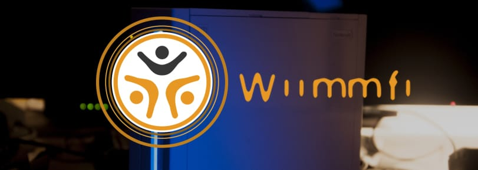

Wiimmfi
Si vous avez besoin d’aide pour quoi que ce soit concernant ce tutoriel, veuillez rejoindre le serveur RiiConnect24 Discord (recommandé) ou [ envoyez-nous un e-mail à [email protected] ](mailto: support @ riiconnect24 .net).

Wiimmfi est un service qui remplace la connexion Wi-Fi Nintendo. Il a été développé par Wiimm et Leseratte.
Si vous obtenez l’erreur 23904 lors de la connexion à Wiimmfi, vous utilisez un correctif obsolète.
Suivez les étapes ci-dessous pour la méthode que vous utilisez pour vous reconnecter à Wiimmfi.
Consultez cette page pour plus de détails.
Types de patchers
Il existe de nombreuses méthodes différentes pour se connecter à Wiimmfi. Choisissez celui qui correspond le mieux à vos besoins.
Patch automatique à partir de la Chaîne Disque à l’aide de Priiloader
Ce dont vous avez besoin
- Une Wii avec Priiloader V0.9 ou supérieur installé
Si vous avez une ancienne version de Priiloader ou ne l’avez pas installé, suivez ce guide pour le mettre à jour / l’installer.
Instructions
- Maintenez la touche RESET pendant que vous démarrez votre Wii (si vous utilisez une Wii Mini, branchez un clavier USB et appuyez sur ECHAP).
- Sélectionnez
System Menu Hacks. - Assurez-vous que le
Wiimmfi patch v4est activé. - Enregistrez les paramètres et quittez.
Si vous voyez le Wiimmfi patch v2 ou Wiimmfi patch v3 à la place, vous ne disposez pas de la dernière version du fichier hacks_hash.ini.
Téléchargez-le sur ici et placez-le dans / apps / priiloader / hacks_hash. ini sur votre carte SD ou clé USB.
Application Homebrew (Disque)
MrBean35000vr (créateur de CTGP-R, un pack de contenu Mario Kart Wii) a créé un Wiimmfi Disc Patcher qui vous permet d’insérer un disque et de patcher le jeu à la volée pour une utilisation Wiimmfi, bien que cela doive être exécuté chaque fois que vous démarrez le disque.
Ce que vous avez besoin
- Une carte SD ou un périphérique USB
- Auto Wiimmfi Patcher
Instructions
- Extrayez Auto Wiimmfi Patcher à la racine de votre carte SD ou clé USB.
- Insérez votre carte SD dans votre Wii, et lancez Auto Wiimmfi Patcher depuis Homebrew Channel.
- Insérez votre disque de jeu (vous pouvez l’insérer avant ou après le lancement de l’application, cela n’a pas d’importance).
- Attendez que le patch soit terminé, et il va démarrer!
Non-Homebrew (Disc)
Grâce à l’exploit str2hax de Fullmetal5, que Leseratte a pu adapter pour le patcher Wiimmfi, vous pouvez exécuter le patch Wiimmfi sans avoir aucun homebrew sur votre Wii.
Qu’est-ce que vous avez besoin
- Une Wii avec une connexion Internet
Instructions
- Insérez votre disque de jeu.
- Accédez à vos paramètres de connexion Internet et définissez le serveur DNS de votre console sur 95.217.77.151.
- Accédez aux informations du contrat WC24 (troisième bouton après avoir cliqué sur “Internet” dans les paramètres).
- Confirmez que vous souhaitez utiliser WC24 et la Chaîne Boutique
- La page du patcher Wiimmfi devrait apparaître. Si ce n’est pas le cas et que vous voyez toujours le contrat de licence par défaut, votre routeur peut ne pas être compatible avec cette méthode.
- Attendez environ 1 minute et 30 secondes pour que le patcher se charge
- Le jeu devrait maintenant démarrer avec le patch Wiimmfi inclus
Patch automatique avec un USB Loader
Si vous utilisez déjà USB Loader GX, essayez de le mettre à jour avec la version la plus récente. Ensuite, il devrait y avoir un paramètre “serveur privé” (à la fois dans les options du chargeur global et dans les options du jeu) que vous pouvez définir sur “Wiimmfi” pour que le chargeur USB corrige automatiquement chaque jeu que vous commencez à travailler avec Wiimmfi.
Patcher une ISO
Vous ne voudrez peut-être pas exécuter un patcher à chaque fois que vous voulez jouer sur Wiimmfi, et peut-être que vous utilisez déjà un loader USB. Pour cette raison, des ISO Patchers ont été créés, certains pour des jeux spécifiques.
Ce dont vous avez besoin
- La copie de votre jeu (WBFS, ISO, cISO et d’autres formes qu’une Wii peut utiliser sont prises en charge).
- RiiConnect24 Patcher (Windows et Unix)
ou - Wiimmfi Patcher (multiplateforme)
- Un USB Loader, cIOS et un périphérique USB pour stocker le jeu (vous devriez déjà les avoir si vous utilisez un USB Loader)
Instructions
- Décompressez le patcher de votre choix dans un dossier, et placez la copie de votre jeu dedans.
- Exécutez le script du patch pour votre système d’exploitation: généralement, il se terminera par
.batpour Windows et.shpour Mac/Linux. Si vous utilisez RiiConnect24 Patcher, sélectionnez votre dispositif (Wii, vWii, ou Dolphin) et choisissez le patcher pour votre jeu. - Une fois que c’est fini, sortez la version du dossier
wiimmfi-images(il se peut qu’elle se trouve dans le dossier en dehors du patcher - ../wiimmfi-images) et copiez-la sur votre périphérique USB.
Patcher WiiWare
Vous pouvez patcher des jeux WiiWare pour pouvoir y jouer avec Wiimmfi.
Qu’est-ce que vous avez besoin
- Une carte SD
- La copie de votre jeu (au format WAD)
- RiiConnect24 Patcher (Windows et Unix)
ou - WiiWare Patcher (multi-platforme)
- Wii Mod Lite
Si vous souhaitez voir comment utiliser le patcher WiiWare, cliquez ici!
Étapes:
- Décompressez le .zip de la dernière version de WiiWare Patcher, et placez-y votre WAD.
- Exécutez le script du patch pour votre système d’exploitation: généralement, il se terminera par
.batpour Windows et.shpour Mac/Linux. Si vous utilisez RiiConnect24 Patcher, sélectionnez votre dispositif (Wii, vWii, ou Dolphin) et choisissez le patcher WiiWare. - Si le processus s’est terminé avec succès, un WAD sera créé dans le dossier
wiiware-wads. Installez-le avec Wii Mod Lite.
Autres trucs
Compétitions Mario Kart Wii
Wiimmfi vous permet de participer à nouveau aux compétitions de Mario Kart Wii.
Qu’est-ce que vous avez besoin
- Une carte SD ou un périphérique USB
- Mario Kart Wii Competition Patcher
Instructions (pour Wii)
- Décompressez Mario Kart Wii Competition Patcher et placez-le dans le dossier
appsde votre carte SD. - Insérez votre carte SD ou votre périphérique USB dans votre Wii.
- Lancez le jeu Mario Kart Wii d’origine (sans patch Wiimmfi).
- Naviguez dans Paramètres -> Paramètres réseau (ou CWF Nintendo) -> Service de messages. Si le service de messages est activé, désactivez-le et réactivez-le.
- Lancez Mario Kart Wii Competition Patcher.
- Le patcher recherchera des fichiers de sauvegarde pour Mario Kart Wii à divers endroits sur votre périphérique de stockage et les téléchargera. Cette étape est effectuée au cas où il y aurait un tournoi manquant dans vos données de sauvegarde. Bien sûr, cela patchera aussi votre Wii pour les tournois.
Si vous utilisez la Wii U, vous devrez exécuter le patcher de compétitions chaque fois que vous voudrez chercher un tournoi, car WiiConnect24 n’est pas activé sur la Wii U.
Jeux DS
Wiimmfi ne supporte pas seulement les jeux Wii, il supporte également beaucoup de jeux DS. Grâce à un exploit appelé nds-constraint, vous pouvez jouer à des jeux DS en ligne sans patcher vos jeux.
Ce dont vous avez besoin
- Une connexion Wi-Fi avec WEP ou sans aucune sécurité
Obtenir un réseau Wi-Fi avec WEP ou sans sécurité est la partie la plus difficile, car les jeux DS ne prennent pas en charge les nouveaux types de sécurité Wi-Fi (à moins qu’il ne s’agisse de l’un des rares jeux qui soient «DSi Enhanced» et puissent utiliser votre configuration Wi-Fi sur votre DSi ou 3DS, comme Pokémon Noir/Blanc). Cependant, de nombreux routeurs prennent en charge la création d’une connexion Wi-Fi invité, ou alors vous pouvez créer un point d’accès sur votre téléphone ou votre ordinateur. Il existe de nombreuses ressources sur Internet qui contiennent des informations à ce sujet, alors utilisez votre moteur de recherche préféré pour les trouver.
Instructions
- Allez dans les paramètres Wi-Fi de votre Nintendo DS. Vous pouvez y accéder depuis le jeu avec lequel vous souhaitez jouer en ligne.
- Configurez une connexion.
- Tapez
167.86.108.126comme DNS primaire. - Tapez
1.1.1.1comme DNS secondaire. - Enregistez vos paramètres et effectuez un test de connexion. Si le test réussi, alors vous êtes prêt à jouer.
Mario Kart Wii Mods
CTGP-R
MrBean35000vr et Chadderz ont une distribution de piste personnalisée appelée CTGP-R qui vous permet d’utiliser un ensemble de pistes personnalisées et dispose d’un patch Wiimmfi automatique. Accédez au site Web ChadSoft pour le téléchargement et les instructions.
MKW Hack Pack
PhillyG a mis ensemble une collection de custom tracks et hacks qui s’appelle “MKW Hack Pack” et accepte la connection Wiimmfi. Pour savoir comment le configurer, accédez à la page wiki.
Wiimms Mario Kart Fun
Wiimm et Leseratte créent une distribution de pistes personnalisée appelée “Wiimms MKW Fun”, qui est mise à jour environ trois fois par an. Il est basé sur le framework LE-CODE de Leseratte, prend en charge Wiimmfi et de nombreuses autres fonctionnalités. Vous pouvez en savoir plus sur sa page wiki.
Continuer vers la navigation du site
Nous avons de nombreux autres tutoriels que vous pourriez aimer.